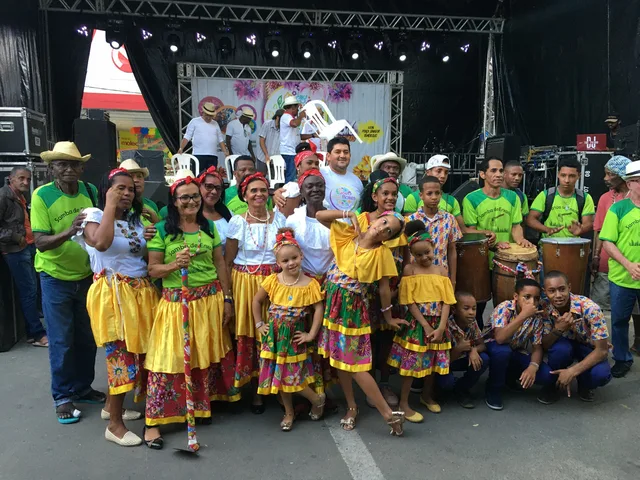

Ministério da Cultura · Cruz das Almas · 2018–2019Prêmio Culturas Populares
Coordenação da elaboração e execução de dois projetos aprovados no Prêmio Culturas Populares, do Ministério da Cultura, contemplando dois mestres da cultura popular, com acompanhamento e prestação de contas.